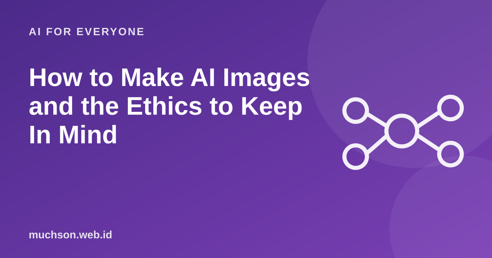

Home › Articles › AI for Everyone
AI for EveryoneHow to Make AI Images and the Ethics to Keep In Mind
One of the fastest-rising searches is how to make pictures with AI. The process is easy, but a good and responsible result takes a little understanding, especially about permission and honesty.

How it works, briefly
AI image generators learn from a huge number of image and description pairs. When you write a description, the model builds a new image that matches it. It does not take an existing photo; it draws one from the patterns it has learned.
Text description of the diagram
- Write a description: subject, style, mood
- Generate: several variations
- Choose and refine: change the weak parts
- Check and label: be honest it is AI-made
A formula for the description
The ethics to keep in mind
Check the terms of use
Always check the terms of use of the tool you use: who owns the output, whether it can be used commercially, and how your uploaded data is treated.
How to label AI-made images
- Write "made with AI" in the caption or the post.
- Do not use an AI image as evidence of a real event.
- For news or educational material, explain that the image is only an illustration.
FAQ
Can AI images be used to sell things?
In many services yes, but the terms differ. Read the licence and do not mislead customers.
Why do hands often look strange in AI images?
Models sometimes struggle with complex details such as fingers and text. Improve it with a clearer description or by editing that part.
Can AI images be recognised?
Sometimes, through odd details or detection tools, but not always. That is why honest labelling matters.